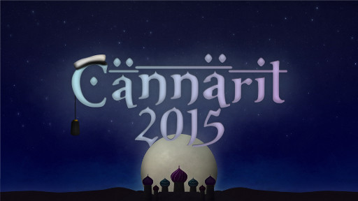

Waarin viikkotiedote 11 - Vaalit ja Waarin wartit!
09.11.2015 fuksit / viikkotiedote / vaalit /
Kuva Fuksien juhlasitseiltä.
Hoi!
Nyt on teekkariperinneviikko ohi ja vautsi vau mitä loistoa oli kaikin puolin jokaisena päivänä! Vaikka suuri osa viikosta meni kipeenä, niin onneksi pääsi kuitenkin loppuhuipennukseen, Teekkariperinnejuhlaan mukaan. :)
TÄNÄÄN ON VAALIT! WUU! PUOLEN TUNNIN PÄÄSTÄ VIELÄPÄ! On tässä postauksessa myös muitakin tärkeitä juttuja. Lukekaas alta, ja muistakaa tulla vaaleihin. ;)
<3 ultsi
Sisällysluettelo
- Tärkeää
- Waarin wartit
- Fuksi- ja kiltatapahtumat
- Tietokillan vaalikokous - ma 9.11.
- TiK-KIK-PT Megazone 25.11.
- Casinoilta - pe 13.11.
- Lenskin Dynamon vakiovuoro - joka keskiviikko klo 20:00
- TiK vs. Inkubio Super Smash Bros. - su 15.11.
- Cännärit - ti 17.11.
- HackTheBoat with Nortal - la 21.11.
- Julkkubandiittien suuren kalterikolistelun avoimet saluunajuhlat - ke 23.11.
- TiK-lanit - 4.-6.12. (ilmo auki!)
- AYY & Muu
- Hae mukaan Teekkarispeksiin!
- AYY tahtoo SINUT - vapaaehtoishaut ovat auki!
- Hae AYY:n vaihtostipendiä!
- Hae oppirahaa AYY:ltä!
- Lopetus
Tärkeää
1. Waarin wartit
Waarin warteissa tarkoituksena on nähdä kasvokkain ja tutustua paremmin sekä jutella hieman opiskelun alkamisesta ja fiiliksistä ylipäänsä tähän mennessä. Kaikki keskustelussa käytävä asia on luottamuksellista. Kaikenlaista palautetta voi antaa ja keskustelu voi olla mitä vain. Keskustelu voi myös kestää siitä 15 minuuutista puoleen tuntiin, jos juttua riittää.
Aikoja Waarin warteille on paljon, ja sellaisen voi varata Doodlesta: http://doodle.com/poll/xpab5fpdn5u238cd. Kirjoita varaukseen oma nimesi sekä puhelinnumerosi, niin voidaan jutella tarkemmin asiasta, jos vaikka aika peruuntuu. Tiedot Doodlessa eivät näy muille. Aikoja tulee olemaan jokaisella viikolla!
Ei mikään iso juttu siis, nähdään max. puoli tuntia aloittaen kiltahuoneelta ja tutustutaan vähän paremmin! :)
Fuksi- ja kiltatapahtumat
1. Tietokillan vaalikokous - ma 9.11.
Tänään maanantaina on suuri päivä, nimittäin killan vaalit! Uusi hallitus ja toimihenkilökatras valitaan klo 15:00 alkaen seminaarihuoneessa T6 (ruokalan vieressä). Jos vielä mietityttää, mitä hallitus ja toimihenkilöt tekevät, voit käydä kurkistamassa sen vanhoista waarin blogin postauksista. Lisäksi tällä hetkellä on käynnissä kuumottelu ja yleinen "mitä kilta haluaa tehdä"-keskustelu TiKähmyt -Telegram-ryhmässä. Sinne voit liittyä tästä linkistä: https://telegram.me/joinchat/A7kVtAI9PpJGqYK_z63pVg
Vaalit Facebookissa: https://www.facebook.com/events/1709210555982058/
Virkoihin ilmoittautuminen: https://tietokilta.fi/tapahtumat/ilmot/hallitusjatoimarit16
2. TiK-KIK-PT Megazone 25.11.
PT:n, KIK:in ja TiK:in liikuntatutorit järjestävät yhdessä Megazone-kokeilun Salmisaaren liikuntakeskuksessa keskiviikkona 25.11.. Pelit alkavat klo 19.30 ja paikalla on oltava 15min ennen eplien alkua. Pelivarusteeksi sopivat rennot vapaa-ajan vaatteet, t-paita ja matalapohjaiset kengät. Hintaa kokeilulle tulee 14 euroa.
Ilmoittautuminen aukeaa maanantaina 9.11. klo 12 ja sulkeutuu 18.11. klo 12. Ilmoittautuminen on sitova! Jos perut osallistumisesi ilmon sulkeduttua sitoudut maksamaan pelin hinnan/hankkimaan itsellesi tuuraajan.
HUOM! Tapahtuma on fuksicruisen päällä. :(
2. Casinoilta - pe 13.11. klo 18:00 @ OK20
Punaselle kaikki, puhelin kii.
Haluatko tuntea itsesi chippikuninkaaksi pokeripöydässä, tykkäätkö hyvistä ruuista, onko IE:n kassa nopean rahan tarpeessa tai tykkäävätkö teekkarit virvoitusjuomista? Mikäli epäilet, että vastaisit joihinkin näistä kysymyksistä kyllä, saavu Otaniemen kasinon avajaisiin 13.11. Otakaari 20 isolle puolelle klo 18.00.
Ilta avataan cocktail-tilaisuudella, josta iltamme jatkuu juhlallisella illallisella nauttien herkullisesta ruuasta ja fiinistä juomatarjoiluista. Illallisen päätteeksi salistamme kuoriutuu pesunkestävä peliluola ruoka- ja virvoketarjoiluineen. 20€ illalliskortin hintaan sisältyy alkupääoma tuplattavaksi talon pöydissä tai vaihtoehtoisesti voit vaihtaa chippisi virvokkeisiin. Kasino on avoinna myös muille asiakkaille klo 22.30 jälkeen ja pelimerkkejä saa myös kassalta. Kasinon spa-tilat ovat tietenkin avoinna, joten älä unohda pyyhettäsi!
Takaamme, että näistä juhlista poistut sekä ravistettuna että sekaisin.
MIKÄ: Casinoilta
MISSÄ: Otakaari 20 kasino
MILLOIN: 13.11. klo 18.00
PUKUKOODI: Cocktail
HINTA: 20€
FACEBOOK: https://www.facebook.com/events/927779177302146/
Ilmoittautuminen on sitova.
Ilmo: http://tietokilta.fi/tapahtumat/ilmot/casinoilta15
3. Lenskin Dynamon vakiovuoro - joka keskiviikko klo 20:00 @ Matlidens skola, Matinkylä 1
Lenskin Dynamo on killan oma liikuntaseura, joka pelaa matseja muita kiltoja ja yhdistyksiä vastaan niin sanotussa teekkarisarjassa Unisportilla. Matsien lisäksi LD:llä on oma vakiovuoro, jolla LD pelaa sählyä, futsalia ja korista. Kuka tahansa voi ilmoittautua mukaan kokeilemaan osoitteessa: http://lenskindynamo.nimenhuuto.com/
4. TiK vs. Inkubio Super Smash Bros. - su 15.11.
Ilmoittautuminen on auki osoitteessa http://tietokilta.fi/tapahtumat/ilmot/murskaveljekset2015!
Murskaveljekset-turnaus kokoaa yhteen Aalto-yliopiston kaksi parasta Smash Bros. -skeneä taistelemaan Otaniemen herruudesta. Tietokilta ja Inkubio kohtaavat Super Smash Bros. for Wii U:n merkeissä Otakaari 5:n tiloissa sunnuntaina 15.11 klo 14:00. Sekä kokeneemmat pelaajat että aloittelijat ovat tervetulleita pelaamaan ja kannustamaan. Tapahtumaan osallistuminen ei maksa mitään.
Mitä: TiK vs. BIO Smash Bros. -turnaus
Missä: Otakaari 5
Milloin: 15.11 klo 14:00-20:00
Hinta: 0€
Ilmo: http://tietokilta.fi/tapahtumat/ilmot/murskaveljekset2015
5. Cännärit - ti 17.11.

Pian on taas aika unohtaa vääjämättä saapuvat synkeät, koleat kelit, ja siirtyä hetkeksi eksoottisempaan, viehkeämpään ja iloisempaan ympäristöön! Tänä vuonna Cännärit kuljettavat sinut kiehtovaan Arabian yöhön 17.11 keskellä Helsinkiä, Club Capitalissa!
Tule ja koe satumaiset bileet kuin suoraan Tuhannen ja Yhden yön tarinoista! Luvassa on mahtavan itämaisen tanssiryhmän lisäksi pukukilpailu mahtavalla pääpalkinnolla!
Capitalin jälkeen klo 02:00 karavaani suuntaa kohti Otaniemen keidasta täydentämään nestevarantoja jatkoille Otakaari 20:n ison puolen tiloihin, missä juhlinta jatkuu kunnes aamu sarastaa.
MITÄ?
Bileet kuuma kuin aavikon hiekka!
MILLOIN?
22:00–03:00 (Club Capital)
02:00–∞ (jatkot Otakaari 20)
17.11.2015
MISSÄ?
Club Capital, jatkot Otakaari 20
LIPUT:
Myynnissä kandidaattikeskuksen aulassa klo 10:00–14:00 seuraavina päivinä:
Maanantai 9.11 – perjantai 13.11
Maanantai 16.11
Liput 4€, lippu ja haalarimerkki 5€
Lippuja myydän myös ovelta à 5€
https://www.facebook.com/events/1642151956039658/
6. HackTheBoat with Nortal - la 21.11.
Venesimulaattori älylaseilla? Millainen on veneilijän Sports Tracker?
Lähde tekemään tulevaisuuden veneilyä Energy Garagelle 21.-22.11. Nortalin ja Busterin kanssa!
Sunnuntai illalla jatketaan tuotosten purkamisella ja parhaiden palkitsemisella OK20 pienellä puolella.
Tule kuulemaan lisää ja ideoimaan Slackkiin: https://hack-the-boat.slack.com/signup
Ilmoittaudu 10.11. mennessä!
Ilmoittautuminen: http://tietokilta.fi/tapahtumat/ilmot/hacktheboat15
7. Julkkubandiittien suuren kalterikolistelun avoimet saluunajuhlat - ke 23.11. klo 20:30
Julkkubandiittien suuren kalterikolistelun avoimet saluunajuhlat Nuo wapun terävimmät sanansaattajat, Julkkubandiitit ovat tekemässä historiallista joukkopakoa, minkä jälkeen on tiedossa suuret pidot rantasaluunallaa 23.11 kello 20:30 alkaen! Muistakaa olla kertomatta kylän sheriffille salaisista juhlista, mutta muille hyville bandiiteille onkin jopa suotavaa mainita asiasta. Jubileum Julkku kutsuu koolle kaikki karjapaimenet ja pelurit yhdessä juhlistamaan onnistunutta sheriffin höynäytystä! Jälkipuinnin yhteydessä veistellään timanttiakin kovempia vitsejä seuraavaa Julkkua varten, joten virittäkää huumorinystyrät seuraavalle tasolle iltaa varten! Samassa riennossa ratkaistaan kylän kovimmat bandiitit. Paikanpäällä on tarjolla ruoka-aineksia, ohjelmaa ja mahdollisuus vaihtaa nesteitä kultahippuja vastaan. Illan aikana hevosen juoma-astia on lämpösenä, johon kovimmat kylpijät voivat varautua ottamalla oman ponchon mukaan.
TL;DR
Mitä? Julkun suuret pidot rantasaluunalla
Milloin? 23.11 klo 20:30 alkaen
Miksi? Koska hyvää seuraa ja sitäkin parempia juttuja, ja vieläpä ilmaiseksi!
8. TiK-lanit - 4.-6.12. (ilmo auki!)
Juhlistetaan Tietokilta-tyyliin itsenäisyyspäivää lanittamalla viikonloppu Energy Garagella.
Käytettävissä on koko viikonloppu, joten pelaamista pitäisi ehtiä harrastamaan edes melkein riittävästi. Tilasta löytyy mm. jääkaappi ja mikro, joten perinteiset lanieväät valmistuvat paikanpäällä kätevästi.
Huomatkaa arviointiviikkoa edeltävä ajankohta, joten valmistautukaa tentteihin ajoissa!
Ilmoittautuminen: http://tietokilta.fi/tapahtumat/ilmot/tiklan2015syksy
AYY & Muu
1. Hae mukaan Teekkarispeksiin!
Jos olet aina haaveillut pääseväsi esiintymään satojen eteen, tai haluaisit nähdä ja kuulla omaa kädenjälkeäsi Suomen suurimmassa opiskelijamusikaalissa, nyt on tilaisuutesi tullut. Teekkarispeksin vuoden 2016 produktion haut lavalle ja musiikkitiimeihin ovat nimittäin nyt käynnistyneet! Näyttelijäksi voi tulla valituksi casting-tilaisuuksiin osallistumalla, produktion tanssitiimi valitaan tanssikokeiden perusteella, ja bändiin voi pyrkiä bändijameihin osallistumalla. Lisäksi sanoittajaksi ja maskeeraajaksi voi hakeutua kyseisten osa-alueiden pomoille (vastuuhenkilöille) ilmoittautumalla.
Tässä vielä aikataulua:
Castingit 15.11. ja 16.11. (ilmoittautumisen DL 8.11.)
Bändijamit 10.11. ja 11.11. (ilmoittautumisen DL 1.11.)
Tanssikoe 14.11. (ilmoittautumisen DL 7.11.) + Koreografirekry (hakemusten DL 4.11.
Sanoitushaku aukeaa 1.11.
Jos kiinnostuit, tarkemmat kuvaukset ja ilmoittautumisohjeet löydät osoitteesta http://www.teekkarispeksi.fi/speksi/blogi/hae-mukaan-vuoden-2016-teekkarispeksiin
2. AYY tahtoo SINUT - tutustu vapaaehtoistehtäviin Rekryillassa 10.11!
Bileitä, etujen puolustamista, perinteitä, yhteistyöyrityksiä - AYY:n vapaaehtoishaut ovat nyt auki osoitteessa http://ayy.fi/stop, mutta mitä kaikkea ylioppilaskunnassamme voikaan tehdä? Tule kuulemaan vapaaehtoisten omista kokemuksista AYY:llä tiistaina 10.11. Elisa Olohuoneessa klo 17! Luvassa rentoa keskustelua ja mahdollisuus kysellä erilaisista tehtävistä pikkunaposteltavan ohessa. We want YOU!
http://www.facebook.com/events/1610603845871903/
3. Hae AYY:n vaihtostipendiä!
AYY jakaa syksyllä vaihtostipendejä tukeakseen vähävaraisten, aktiivisten yhteisön jäsenten kansainvälistymismahdollisuuksia.
Stipendejä voi hakea 15.11. klo 23.59 asti.
Lisätietoja stipendeistä ja hakulomakkeen löydät täältä: http://ayy.fi/jasenille/palvelut/stipendit/
4. Hae oppirahaa AYY:ltä!
Aalto-yliopisto ja sen ylioppilaskunta myöntävät yhteistyössä oppirahaa päräyttäville opiskelua ja oppimista edistäville projekteille. Voit hakea rahaa yksin, yhdessä tai yhdistyksenä – kunhan idea on hyvä me haluamme auttaa sen toteuttamisessa!
Haku on jatkuva ja hakemukset käsitellään kuukausittain, tarkoitus on että hyvä ideasi ei pääse happanemaan vaan pääset heti toteuttamisen makuun. Hakemukset käsittelee ja hyväksyy Aalto-yliopiston ylioppilaskunnan koulutuspoliittinen sektori ja Aalto-yliopiston opetuksesta vastaava vararehtori.
https://lomake.ayy.fi/koulutuspolitiikka/2015/04/15/oppirahaa-kansalle/
Lopetus
Vaaaaaaaalit!
<3 ultsi